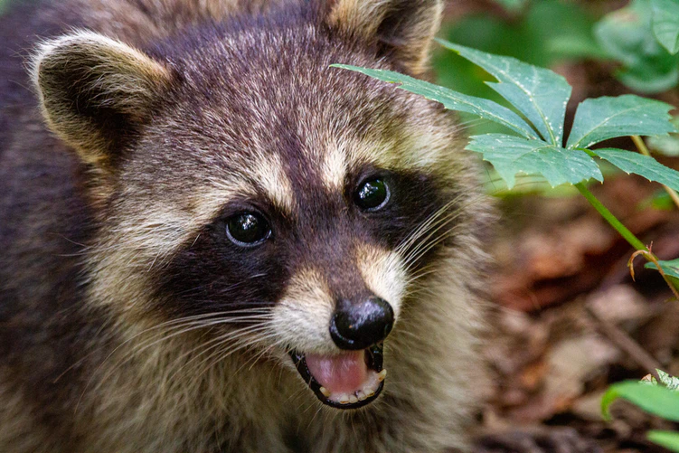

#Procyon Lotor
O guaxinim, por vezes chamado rato-lavadeiro (Procyon lotor)[1], é um mamífero da família dos procionídeos bastante parecido com o Procyon cancrivorus (espécie sul-americana). Estes animais são encontrados nas Américas e são conhecidos também pelo nome estadunidense raccoon. No Brasil, "guaxinim"[2] e "jaguacinim"[3] referem-se a vários Procionídeos, especialmente ao Procyon cancrivorus.[4] Existem também na Europa central e no Cáucaso e no Japão, onde se estabeleceram após fugas de indivíduos vindos de outras regiões.